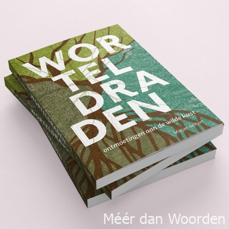
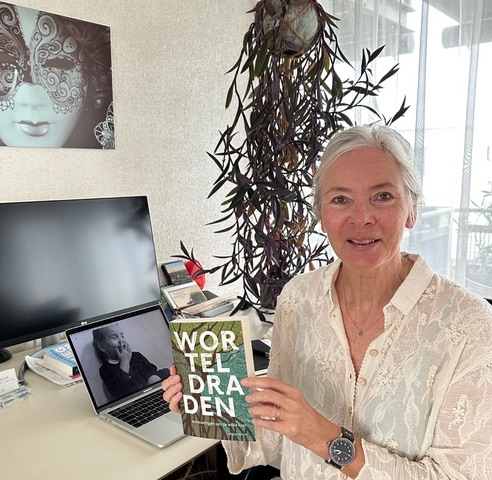
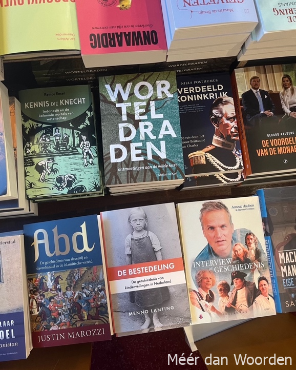
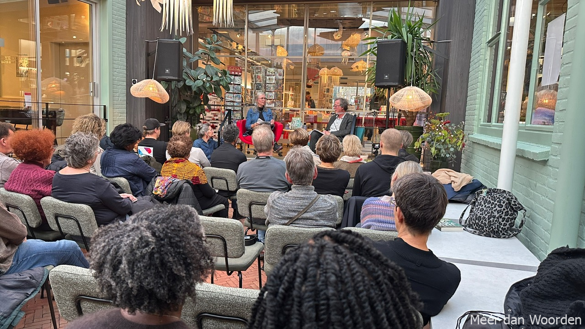

Lezen om te begrijpen, niet om te oordelen
‘Worteldraden – nieuwsbulletin’
editie 2, april 2026.

Waar gaat het boek over?
Auteur Marjan de Kort vertelt. ‘In ‘Worteldraden’ ga ik op zoek naar de levens van Jan en Charles de Kort, broers van mijn opa, die als pater-onderwijzer in Suriname werkten, dat verre exotische land, dat eeuwenlang een kolonie was van Nederland. Als kind al was ik geïntrigeerd door de familieverhalen over ‘het goede werk’ van deze heerooms. Maar als tiener voelde ik ook weerstand tegen overheersing van de ene mens door de andere.

Later begon ik mezelf vragen te stellen als: Hoe vergaat het de Surinamers na eeuwenlange slavernij en kolonisatie? Waarom daar het geloof brengen, de Surinamers hebben toch zeker hun eigen geloof? Wat vonden ze daar eigenlijk van die paters De Kort? En met de onthullingen over misbruik in de kerk, deugde het allemaal wel wat beide mannen daar gedaan hebben? In 2014 besloot ik naar Suriname te gaan om antwoorden te vinden op mijn vragen.
Zo is ‘Worteldraden’ de weerslag geworden van een historische ontdekkingsreis. Een kleurrijk mozaïek en een meerstemmige vertelling, geïnspireerd door ‘De Koningin van Paramaribo’ van Clark Accord over Maxi Linder, de bekendste prostituee van Suriname, die ook in ‘Worteldraden’ voorkomt. In ‘Worteldraden’ beleef je de vaak veelbewogen levensverhalen van uiteenlopende personages én de rol die de paters De Kort daarin speelden. ‘Worteldraden’ is niet per se een boek over het geloof, het is veeleer een boek over gedeelde levens tegen de achtergrond van een verdeeld verleden. Het is vooral een boek over het leven, over worsteling en hoop, over verschillen en overeenkomsten, over vertellen en luisteren; niet om te oordelen, maar om te begrijpen. Suriname leerde mij dat ontmoeting zorgt voor toenadering; over pijn, boosheid en verschillen heen. Daar begint begrip. Die boodschap wil ik graag uitdragen, juist nu.’
Lezers over ‘Worteldraden’
• “Indrukwekkend, openhartig en origineel debuut.”
• “Ik was bang dat het een zwaar en beladen boek zou zijn, maar het is vlot en toegankelijk geschreven. Daardoor is het juist licht en soepel.”
• “Wat een boeiend boek, het maakt me heel nieuwsgierig naar Suriname.”
• “Dankjewel voor de inzichten die je biedt in Worteldraden. Heel leerzaam, ik kijk nu anders naar ons verleden met Suriname.”
• “Verfrissend verhaal over menselijke ontmoetingen.”
• “Mooie reflectie over persoonlijke wortels en geschiedenis.”
• “Worteldraden is een ontdekkingstocht die tegelijk historisch, persoonlijk en meeslepend is,” aldus recensent Pierre M.G. Peeters op Hebban.

Agenda

• 23 oktober t/m 21 november 2025 Boekpresentaties in Suriname en Nederland, beeldverslag zie: Instagram – Facebook – Linkedin en www.meerdanwoorden.com
• 26 februari 2026 – presentatie & interview, 19:30 – 21:30 uur, Polderhuis Museum, Zuidstraat 154-156, 4361 AK Westkapelle, www.polderhuiswestkapelle.nl
• 12 mei 2026 – boekbespreking & signeersessie, 14:30 – 16:30 uur, Dorpshuis ’t Web, Zuringveld 1, 4847 KS Teteringen, www.tweb-teteringen.nl
• 27 september 2026 (precieze tijd volgt nog), Caraïbische Salon (Werkgroep Caraïbische Letteren), Huis de Pinto, St. Antoniesbreestraat 69, 1011 HB Amsterdam, www.huisdepinto.nl
• Najaar 2026 (precieze datum volgt) Cultuurpodium Porgy & Bess, Noordstraat 56, 4531 GJ Terneuzen, www.porgyenbess.nl
Gegevens boek
Prijs: € 23,95
Boekhandelskorting: 30%
ISBN: 978 94 93425 54 5 NUR: 320
Uitgeverij: Parisbooks, info@parisbooks.eu
Gegevens auteur
Marjan de Kort – tekstschrijver en journalist
Interview, presentatie, signeersessie aanvragen via: info@meerdanwoorden.com
Website: www.meerdanwoorden.com
Socials: Instagram – Facebook – Linkedin
Tel.: 06 407 806 37
(foto: Marijn Kluijfhout)